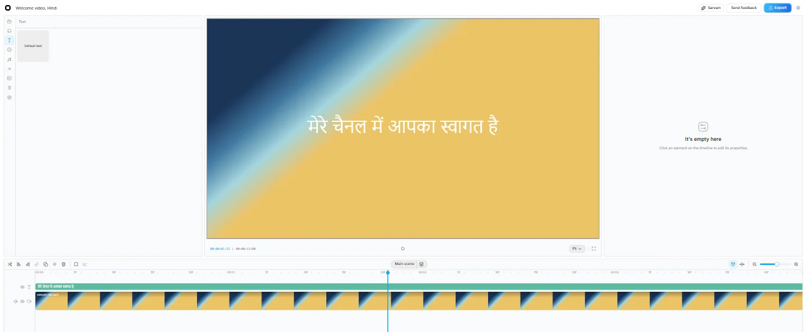
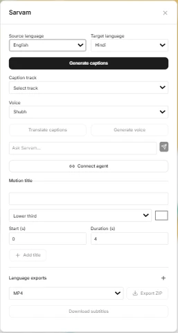

Edit once, publish in many languages
An open-source browser video editor with Sarvam AI captions, translation and dubbing.

An open-source browser video editor with Sarvam AI captions, translation and dubbing.

Each language gets its own video and SRT file, packaged in one ZIP.
Welcome to my channel.
मेरे चैनल में आपका स्वागत है।
என் சேனலுக்கு வரவேற்கிறேன்.
আমার চ্যানেলে স্বাগতম।
నా ఛానెల్కు స్వాగతం.
Split, trim, undo and redo, with projects kept in the browser.
Timestamped and editable, then translated and voiced in step.
Lower-third, rising and pop titles you can edit.
Sarvam-105B or any MCP agent drives the same editor tools.

git clone https://github.com/boss477/sarvam-editor.git
cd sarvam-editor
Copy-Item apps/web/.env.example apps/web/.env.local
bun install
cd apps/web
bun run dev --port 3015